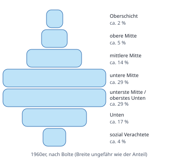

Schichtmodelle
Mit einem KI-Tutor lernen
Ein KI-Tutor erklärt dir diese Seite und hilft dir bei den Aufgaben. Wähl deinen Assistenten:
Mit Claude öffnen Mit ChatGPT öffnen Mit Mistral Vibe öffnen
Du nutzt dein eigenes Konto beim Anbieter. Der Assistent ist kein Angebot von lernapps.net: lernapps liefert nur Inhalte und Aufgaben. Die Wahl gilt für alle Seiten, nur auf diesem Gerät.
Kurz ausprobiert
Nach dieser Seite kannst du drei Schichtmodelle vergleichen. Zwei Thesen zum Start.
Aufgabe
Lösung
These 1 richtige Antwort
Eine breite Mitte zeigt, dass sich die Lagen angeglichen haben.
These 2
Zu einer Spaltung passt ein Bild mit klaren Grenzen und wenig Mitte.
Die Form eines Modells transportiert schon eine These.
Das steckt dahinter
- soziale Schicht
Eine Gruppe mit ähnlichem Status, vor allem nach Bildung, Einkommen und Beruf.

Dahrendorf (1965): Die Arbeiterschicht ist die größte Gruppe.
Quelle: eigene Zeichnung. Lizenz: CC-BY-4.0.
Bolte: breit in der unteren Mitte, schmal oben und unten.
Quelle: eigene Zeichnung. Lizenz: CC-BY-4.0.| Gruppe | Anteil |
|---|---|
| obere und mittlere Dienstklasse | 32 % |
| gelernte und un-/angelernte Dienstleister | 21 % |
| Facharbeiter und un-/angelernte Arbeiter | 19 % |
| alter Mittelstand (oberer bis unterer) | 10 % |
| Unterschicht | 6 % |
| Ausländerinnen und Ausländer, vor allem unten | etwa 10 % |
Merke
- 1960er: Arbeiterschicht groß (Dahrendorf), breite Mitte (Bolte).
- 2014: Dienstklassen wachsen, mehr Dienstleister als Arbeiter, Unterschichtung durch Migranten.
- Modelle können informieren oder eine politische Sicht zeigen.
Jetzt du
Aufgabe
Lösung
Richtige Antwort: 45 %
Fast die Hälfte gehörte zur Arbeiterschicht – die größte Gruppe der 1960er.
Aufgabe
Lösung
Richtige Antwort: Dienstklasse – Verwaltungsangestellte; falscher Mittelstand – einfache Dienstleistungsberufe; Arbeiterelite – Meister; Eliten – Machteliten in Politik, Wirtschaft, Medien
Der „falsche Mittelstand“ fühlt sich zur Mitte gehörig, steht sozial aber den Arbeitern nahe.
Aufgabe
Lösung
Richtige Antwort: Die Aussage stimmt.
Die Arbeiterschicht, die früher unten dominierte, ist geschrumpft; Dienstleistungsberufe sind gewachsen.
Aufgabe
Lösung
Migrantinnen und Migranten sind in den unteren Etagen viel stärker vertreten als oben. richtige Antwort
Viele Zugewanderte arbeiten in einfachen Berufen und schieben sich unter die einheimische Bevölkerung.
Die Unterschicht ist verschwunden.
Die Unterschicht gibt es weiter, mit etwa 6 %.
Alle Schichten sind gleich groß geworden.
Die Schichten sind weiter sehr verschieden groß.
Unterschichtung heißt, dass eine neue Gruppe unten in die Sozialstruktur eintritt.
Offene Aufgabe
Nenne 2 Veränderungen von Dahrendorf (1965) zu Geißler (2014) und beurteile in 1 Satz: Sind Schichtmodelle eher informativ oder manipulativ?
Eine gute Antwort enthält:
- Die Dienstklassen sind stark gewachsen; der alte Mittelstand ist geschrumpft. Nachlesen
- Unten gibt es mehr Dienstleister als Arbeiter; Migranten sind unten stärker vertreten (Unterschichtung). Nachlesen
- Das Urteil wägt ab: Modelle informieren, aber ihre Form und Auswahl können eine politische Sicht ausdrücken. (Form)
Lösung
- Die Dienstklassen sind von 12 % auf zusammen über 30 % gewachsen, der alte Mittelstand ist geschrumpft.
- Unten arbeiten heute mehr Menschen in Dienstleistungen als in Fabriken, und viele Migranten sind unten. Urteil: Schichtmodelle informieren, aber wer das Haus zeichnet, entscheidet mit, was man sieht – deshalb immer die Quelle prüfen.
Als Nächstes: Was sind soziale Milieus?
Fehler gefunden oder eine Idee für diese App?